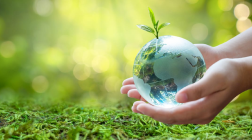
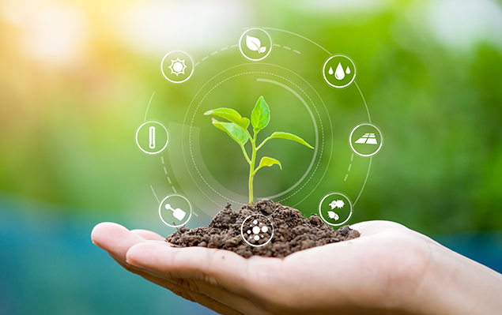

Agricultura sustentável
Aliadas a outras práticas agrícolas, como o uso de variedades melhoradas, irrigação e o uso intensivo de
insumos
industriais, sobretudo os fertilizantes químicos e
os agrotóxicos, além do uso intensivo de máquinas agrícolas no preparo do solo,
caracterizaram a chamada "Revolução Verde". Esse modelo produtivo, que vem sendo praticado nas últimas
décadas,
é também chamado de agricultura convencional.
A Revolução Verde teve seus méritos: aumentou a produção mundial de alimentos e diminuiu os custos de
produção,
o que beneficiou os consumidores. Contudo,
os resultados ambientais e sociais não foram os melhores, como degradação dos solos pela ocorrência de erosão,
acidificação, salinização e compactação, desmatamentos ilegais, erosão genética e perda da biodiversidade pela
especialização da produção, entre outros.

Em resposta a esses impactos, surgiram diversos movimentos em prol de uma agricultura mais sustentável,
ambiental e socialmente.
Esses movimentos, cada um com suas especificidades, voltaram-se para práticas agrícolas que respeitam os
recursos naturais e o conhecimento tradicional.
Surgiu, então, o termo "agricultura sustentável".
A palavra sustentável é originada do latim "sus-tenere" e significa "sustentar, suportar ou manter".

A agricultura sustentável é um modelo de produção agrícola que busca equilibrar a produção de
alimentos com a conservação dos recursos naturais e a preservação do meio ambiente, garantindo a
sustentabilidade a longo prazo.
Existem diversas práticas agrícolas sustentáveis que podem ser adotadas para tornar a agricultura mais
eficiente
e menos prejudicial ao meio ambiente.
Através dessas práticas, a agricultura pode ser mais eficiente no uso dos recursos naturais, minimizando o
impacto negativo no meio ambiente e contribuindo
para a sustentabilidade do sistema agrícola. Algumas dessas práticas incluem:
A sustentabilidade social, econômica e ambiental são componentes estreitamente interligados e necessários
para uma agricultura verdadeiramente sustentável.
No entanto, somente criando políticas que integram interesses sociais, ambientais e econômicos, as
sociedades podem promover sistemas agrícolas mais sustentáveis.